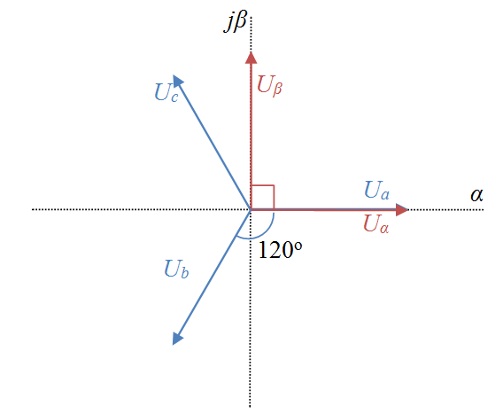

In a three-phase electric system, we have three sinusoidal waveforms with a phase shift of 120° between them:

The Park transform projects the rotating current or voltage vectors from a static ABC reference frame into a rotating DQY reference frame without loss of information, and thereby eliminates time-dependencies of values. Instead of sine and cosine functions, we only deal with static amplitudes. This simplifies calculations such as PI or PID control algorithms drastically. The results are then transformed back into the ABC reference frame and can be applied to the motor drive circuits.
The first step of that procedure is the Clarke or XYZ transformation. The idea is that in blanced 3-phase systems the sum of vectors is zero:
Alrebracially, these vecors are linear dependent. Geometrically, these vectors lie in a plane. We have a two-dimensional system, and we can express one vector by the sum of the two others:
The idea is to transform these vectors from the ABC reference frame (coordinate system) into a XYZ reference frame with , , where and the x and y axes are orthogonal to each other. This can be done with the Clarke transformation matrix C:
To convert an ABC-referenced column vector to the XYZ reference frame, the vector must be pre-multiplied by the Clarke transformation matrix:
Note that the component is zero.
The transformed signals are still AC signals, they are time depenent sine waves, or vectors rotating with the the freqency .
The Park transformation adds another transformation step to transform these vectors from the static XYZ reference frame into the rotating DQZ reference frame. This trick eliminates time-dependencies completely. Instead of sine waves, we only work with time-independent amplitudes. The D stands for "direct", the Q stands for "quadrature", the Z stands for "zero". Since the vector lies on the DQ plane, the Z component can be omitted in the calculations.
Transformation is done with a rotation matrix R:
The angle Θ is a function of time, its frequency is equivalent to ω.
To convert an XYZ-referenced vector to the DQZ reference frame, the vector must be pre-multiplied by the rotation matrix:
Note that the components in both reference frames are identical (zero).
Calculations can then be done easily in the DQZ space, and must be transformed back into the XYZ, then ABC frame in order to be applied in the real world. Luckily, both transformation matrices, Clarke and rotation, have an inverse matrix, so this is no problem.
The attentive reader certainly has noticed that the Clarke transformation matrix only carries constant values. Therefore we can combine the Clarke with the rotation matrix to obtain a Park transformation matrix, which does everything in a single step.